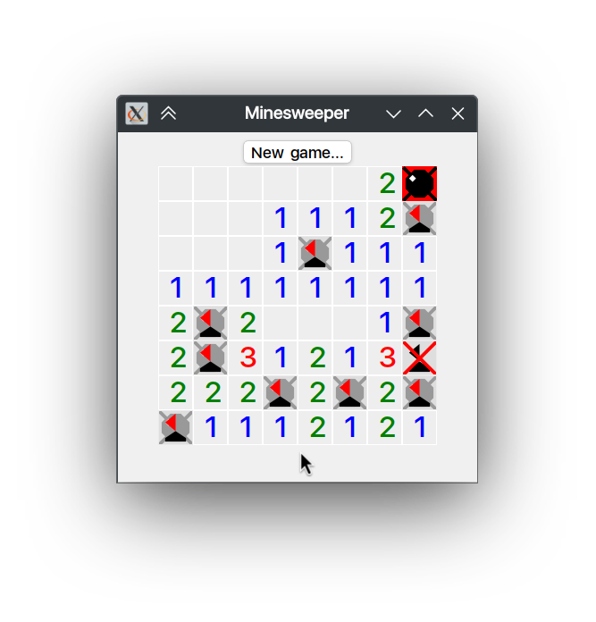

- Note
- This page describes an example listed in Application Examples.
- Minesweeper game implementation driven by Aui Style Sheets.
Game Logic#
The entire game logic is located in MinesweeperWindow.cpp.
Initialization#
The game starts with beginGame function. beginGame Initializes a new Minesweeper game with specified dimensions and bomb count. Clears any previous game state, sets up the grid layout, initializes cell views, connects click handlers for opening cells and flagging, and finally packs UI elements to be displayed.
- Generates a grid with
AGridLayout
- Dynamically creates
CellViews based on game data
- Handles user events (left clicks and right clicks)
void MinesweeperWindow::beginGame(int columns, int rows, int bombs) {
mOpenedCells = 0;
mBombs = bombs;
mFieldColumns = columns;
mFieldRows = rows;
mReveal = false;
mBombsPlanted = false;
mGrid->setLayout(std::make_unique<AGridLayout>(columns, rows));
mField.clear();
mField.resize(columns * rows);
for (int i = 0; i < columns * rows; ++i) {
int x = i % columns;
int y = i / columns;
auto cell = _new<CellView>(fieldAt(x, y));
setupEventHandlers(x, y, cell);
mGrid->addView(cell);
}
pack();
}
Event handling#
As was mentioned, the game handles events by setting signal handlers on CellView. This is done inside setupEventHandlers. Here's a little breakdown:
Toggle flag (right click)#
In a minesweeper game, right click toggles the flag. First, we check that game is not finished (mReveal), then we check if cell is open. Finally, we toggle the flag:
connect(cell->clickedRight, this, [&, x, y]() {
if (mReveal) {
return;
}
auto& c = fieldAt(x, y);
if (!(c & FieldCell::OPEN)) {
c ^= FieldCell::HAS_FLAG;
updateCellViewStyle(x, y);
}
});
As you can see, game data is represented by FieldCell enum:
EMPTY = 0,
HAS_BOMB = 1,
OPEN = 2,
HAS_FLAG = 4,
RED_BG = 8,
DONT_PLANT_BOMB_HERE = 16,
};
FieldCell is just a bitfield implemented thanks to AUI_ENUM_FLAG.
Open cell (left click)#
Left click delegates cell opening logic to openCell which contain game-specific logic.
connect(cell->clicked, this, [&, x, y]() {
if (mReveal) {
return;
}
openCell(x, y, true);
});
Cell style#
In response to user's actions, the game updates its internal state. To visualize the state, updateCellViewStyle function is called. This method updates the style of a cell at coordinates (x, y) based on its state or any other conditions (e.g., game over, win/lose states). It triggers an event to let the framework know that custom styles need to be re-evaluated and applied accordingly.
In game style sheets, a custom selector tied to CellView is used to display various cell states:
template<FieldCell fieldCell>
public:
bool isPossiblyApplicable(AView* view) override {
return dynamic_cast<CellView*>(view) != nullptr;
}
bool isStateApplicable(AView* view) override {
if (auto c = dynamic_cast<CellView*>(view)) {
return (
c->fieldCell() & fieldCell) == fieldCell;
}
return false;
}
void setupConnections(AView* view, const _<AAssHelper>& helper) override {
IAssSubSelector::setupConnections(view, helper);
}
};
Such selector is used in style sheets accordingly:
{
CellSelector<FieldCell::OPEN>(),
Border { 1_px, 0xffffff_rgb },
BackgroundSolid { 0xeeeeee_rgb },
},
{
CellSelector<FieldCell::HAS_FLAG>(),
BackgroundImage { ":minesweeper/flag.svg" },
},
Also, for reveal game state (on win/lose) there's an additional selector:
public:
bool isPossiblyApplicable(AView* view) override {
return dynamic_cast<MinesweeperWindow*>(view) != nullptr;
}
bool isStateApplicable(AView* view) override {
if (auto c = dynamic_cast<MinesweeperWindow*>(view)) {
}
return false;
}
void setupConnections(AView* view, const _<AAssHelper>& helper) override {
IAssSubSelector::setupConnections(view, helper);
}
};
RevealSelector and CellSelector are used together to show game results:

{
RevealSelector {} >> CellSelector<FieldCell::HAS_BOMB>(),
BackgroundImage { ":minesweeper/bomb.svg" },
},
{
RevealSelector {} >> CellSelector<FieldCell::HAS_FLAG>(),
BackgroundImage { ":minesweeper/no_bomb_flag.svg" },
},
{
RevealSelector {} >> CellSelector<FieldCell::HAS_FLAG | FieldCell::HAS_BOMB>(),
BackgroundImage { ":minesweeper/bomb_flag.svg" },
},
Source Files#